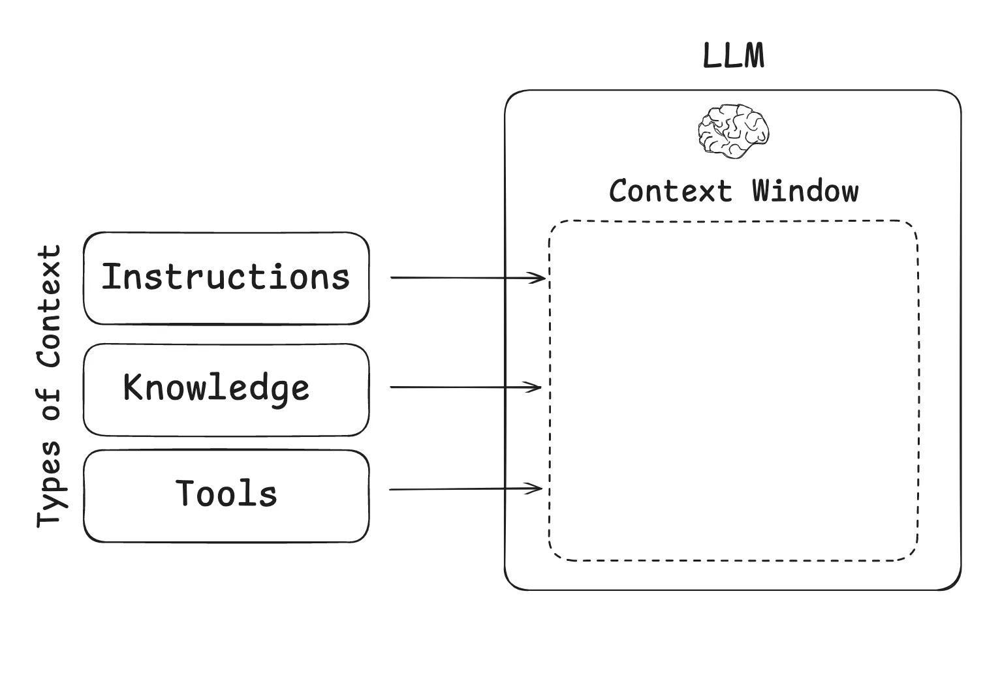

Tempo de leitura: 8 minutos. Autor: Hugo S. Nascimento.
Contexto: A maioria dos pilotos corporativos de IA funciona bem no primeiro turno e colapsa por volta do décimo segundo. Quando agentes autônomos consultam APIs de ERP em português, leem tabelas fiscais e acumulam retornos extensos de ferramentas, a janela de contexto inchada dispara a latência, queima orçamento de tokens em USD e gera alucinações silenciosas. Partindo do estudo original da LangChain sobre context engineering para agentes, detalho como estruturamos arquiteturas de contexto em LangGraph na hsnlabs para operações brasileiras.
Resumo executivo para lideranças de tecnologia: Um LLM opera como uma CPU cuja memória de trabalho é a janela de contexto. Quando equipes de engenharia despejam instruções sem curadoria, trechos extensos de busca vetorial e cargas brutas de API dentro dessa janela finita, a acurácia cai mesmo nos modelos de fronteira. Ao governar o contexto como recurso de execução em quatro frentes, escrever, selecionar, comprimir e isolar, com implementação nativa em LangGraph e auditoria em LangSmith, empresas reduzem o desperdício em USD, aplicam mascaramento de dados para conformidade com a LGPD e estabilizam fluxos autônomos.
Nota de diligência e especificações técnicas
Os padrões arquiteturais e estratégias de context engineering detalhados neste post têm como base pesquisa primária de mercado e especificações oficiais de engenharia:
- Estudo original da LangChain sobre context engineering: taxonomia das estratégias de escrever, selecionar, comprimir e isolar contexto em agentes de produção e pesquisa, publicada em Context Engineering for Agents pela LangChain.
- Especificação de orquestração com estado no LangGraph: checkpoints de curto prazo, armazenamentos persistentes entre sessões e isolamento multiagente, documentados em LangGraph Technical Documentation.
- Plataforma de observabilidade e avaliação LangSmith: rastreamento granular de tokens e avaliação de regressões após ajustes de contexto, documentados em LangSmith Technical Documentation.
- Prática de engenharia LangChain e LangGraph da hsnlabs: padrões de arquitetura corporativa e metodologia de implantação, disponíveis em Engenharia de Produção LangChain e LangGraph da hsnlabs.
1. Por que a janela de contexto é o gargalo de produção em agentes corporativos
Andrej Karpathy comparou LLMs modernos a um novo tipo de sistema operacional: o modelo funciona como a CPU e a janela de contexto equivale à memória RAM, atuando como memória de trabalho finita. Assim como o kernel de um sistema operacional decide o que permanece na RAM e o que sai para disco, context engineering é a disciplina de preencher a janela de contexto exclusivamente com a informação necessária para o próximo passo de execução.
Em aplicações corporativas, essa memória de trabalho disputa espaço entre três categorias de dados:
- Instructions: prompts de sistema, regras de alçada, exemplos de comportamento e schemas de ferramentas.
- Knowledge: fatos verificados do negócio, políticas internas, tabelas tributárias e registros operacionais recuperados.
- Tools: parâmetros intermediários e retornos brutos devolvidos por APIs externas e bancos de dados.

Interfaces simples de chat escondem essa restrição. Agentes autônomos, ao contrário, executam ciclos contínuos que alternam raciocínio do modelo e chamadas a sistemas externos, acumulando cada retorno JSON e consulta SQL dentro da trajetória ativa.

Quando fluxos financeiros ou fiscais avançam por dezenas de turnos, o acúmulo sem curadoria destrói a confiabilidade em quatro modos de falha descritos por Drew Breunig e recorrentes em auditorias no Brasil:
| Modo de falha | Mecanismo dentro da janela de contexto | Impacto na operação corporativa brasileira |
|---|---|---|
| Context Poisoning | Uma alucinação inicial ou erro de retorno entra na memória de trabalho e persiste nos turnos seguintes | Lançamentos em ERPs como SAP ou Totvs Protheus propagam o dado errado para contas a pagar e conciliações |
| Context Distraction | Histórico excessivo sufoca os padrões aprendidos de raciocínio do modelo | O agente ignora travas de alçada definidas no início do prompt e repete consultas redundantes |
| Context Confusion | Schemas supérfluos de ferramentas ou trechos irrelevantes enviesam a próxima decisão | Modelos acionam endpoints errados de mutação ou misturam regras de filiais distintas em uma mesma resposta |
| Context Clash | Fatos contraditórios de buscas diferentes ou turnos antigos coexistem no mesmo prompt | Agentes de aprovação recebem limites de crédito divergentes e travam em laços sem convergência |
Por esse motivo, despejar notas fiscais ou extrações brutas de banco em um repositório vetorial colapsa em produção, padrão analisado em Por Que RAG Tradicional Falha em ERPs Financeiros. Janelas maiores não corrigem falta de curadoria, apenas multiplicam a fatura em USD a cada turno.
2. As quatro estratégias de context engineering: escrever, selecionar, comprimir e isolar
Para impedir que janelas infladas degradem a precisão e o custo operacional, equipes de engenharia organizam o context engineering em quatro operações complementares em torno de um estado persistente.
flowchart TD
S["Estado de Execução em LangGraph<br>Checkpoints de Memória, Schema Tipado e Telemetria de Tokens"]
W["1. Escrever Contexto<br>Persistir scratchpads e memórias entre sessões fora da janela ativa"]
L["2. Selecionar Contexto<br>Recuperar ferramentas, regras e dados verificados por etapa"]
C["3. Comprimir Contexto<br>Sumarizar trajetórias e podar retornos extensos de APIs"]
I["4. Isolar Contexto<br>Separar cargas em subagentes, sandboxes e campos de estado"]
W --> S
S --> L
L --> C
C --> I
I --> SEscrever contexto fora da janela com scratchpads e memórias
Escrever contexto significa salvar registros intermediários fora da janela do modelo para que o LLM não carregue todo o histórico na memória ativa:
- Scratchpads de sessão: durante uma apuração fiscal ou conferência de pedidos em português, o agente grava planos de trabalho, chaves de notas e totalizadores em arquivo ou campo dedicado do estado. No pesquisador multiagente da Anthropic, o coordenador grava seu plano em memória logo no início para evitar perda de rumo caso a janela ultrapasse duzentos mil tokens.
- Memórias entre sessões com governança LGPD: seguindo referências como Reflexion e Generative Agents, produtos como ChatGPT, Cursor e Windsurf sintetizam memórias duráveis a partir de interações passadas. Em ambientes corporativos brasileiros, antes de persistir memórias de longo prazo, o fluxo precisa aplicar mascaramento de dados pessoais como CPF, CNPJ de sócios, e-mail e telefone para atender à LGPD sem contaminar sessões futuras.
Selecionar contexto relevante sem sobrecarregar ferramentas ou RAG
Gravar contexto só gera ganho quando o agente recupera apenas o recorte necessário em cada nó da execução:
- Leitura granular do scratchpad: quando o scratchpad reside em um objeto tipado de estado e não em texto corrido, a engenharia define com precisão quais campos ficam visíveis ao modelo em cada etapa.
- Seleção de memórias procedurais, episódicas e semânticas: agentes de código usam arquivos objetivos como
CLAUDE.mdou arquivos de regras do Cursor e Windsurf para instruções procedurais, enquanto fatos amplos exigem índices vetoriais ou grafos de conhecimento. Seleção mal calibrada quebra a confiança do usuário, como mostrou Simon Willison ao relatar que o ChatGPT puxou sua localização salva da memória para injetá-la em uma imagem sem pedido explícito. - RAG sobre descrições de ferramentas: entregar dezenas de ferramentas de ERP com descrições sobrepostas confunde o modelo. Aplicar busca semântica sobre descrições de ferramentas para expor apenas o subconjunto relevante triplicou a precisão de escolha de ferramentas em estudos recentes.
- Além do RAG genérico em consultas brasileiras: como destacou Varun da Windsurf, indexar código ou documentos corporativos não equivale a recuperar contexto útil. Em escala, similaridade pura por embeddings perde confiabilidade e precisa combinar análise estrutural, busca exata por palavras-chave, grafos de conhecimento e reordenamento por relevância, mesma arquitetura aplicada em Como Construir uma Ontologia Operacional de Negócios em Python com Pydantic e MCP.
Comprimir contexto com sumarização e poda determinística
Consultas extensas a ERPs e integrações de estoque devolvem dezenas de colunas inúteis para a decisão. Comprimir mantém apenas o sinal indispensável e reduz o gasto em USD por transação:
- Sumarização de trajetória e fronteiras: ferramentas como o Claude Code executam compactação automática ao atingir noventa e cinco por cento da janela de contexto, resumindo a conversa acumulada. Também é eficaz aplicar sumarização na saída de ferramentas pesadas ou na passagem entre agentes, técnica na qual a Cognition treina modelos específicos para preservar decisões críticas sem descartar exceções.
- Poda determinística de histórico: diferente da sumarização por LLM, a poda filtra mensagens antigas, cabeçalhos redundantes e campos fiscais inertes por regras fixas ou modelos podadores como o Provence, cortando latência e custo sem chamada extra de inferência.
Isolar contexto entre subagentes, sandboxes e schema de estado
Isolar contexto separa fisicamente grandes volumes de dados para que ruídos operacionais não disputem atenção no prompt principal:
- Especialização multiagente: bibliotecas como OpenAI Swarm e o pesquisador paralelo da Anthropic atribuem a cada subagente suas próprias ferramentas, instruções e janela privada. A Anthropic observou ganho de qualidade sobre agentes únicos, com a ressalva de que ramificações paralelas exigem coordenação rigorosa e podem consumir até quinze vezes mais tokens do que um fluxo simples.
- Isolamento em sandboxes de execução: o CodeAgent da HuggingFace executa código gerado em um sandbox isolado e devolve ao LLM apenas o valor resumido de retorno, mantendo tabelas extensas, planilhas ou arquivos binários em variáveis de ambiente fora do prompt.
- Particionamento por schema de estado: mesmo em grafos com um único agente, um schema estruturado permite expor apenas mensagens sintetizadas ao modelo enquanto cargas completas de pedidos, tokens de auditoria e registros mascarados para LGPD trafegam isolados em campos específicos do estado.
[Agentes] x [a Gente] — Fora do hype, discutimos como Agentic AI multiplica e alavanca a capacidade laboral humana. Análises quinzenais publicadas na newsletter de Hugo S. Nascimento no LinkedIn com mais de 1.600 assinantes. Acompanhar no LinkedIn ↗
3. Como implementar context engineering com LangGraph e LangSmith
 Orquestração de baixo nível com estado para controlar escrita, seleção, compressão e isolamento de contexto.
Orquestração de baixo nível com estado para controlar escrita, seleção, compressão e isolamento de contexto.
Ajustar prompts às cegas não funciona quando não há visibilidade sobre onde os tokens estão sendo queimados. Antes de otimizar janelas, a equipe precisa de duas bases no LangSmith: rastreamento de consumo de tokens por nó para localizar gargalos de custo em USD, e suítes de avaliação para comprovar que comprimir ou podar contexto não introduziu regressões silenciosas.
Como o LangGraph estrutura agentes como grafos cíclicos explícitos que trafegam um objeto de estado tipado entre nós, cada estratégia de context engineering se traduz diretamente em recursos nativos da arquitetura:
| Estratégia | Recurso no LangGraph e ecossistema | Efeito prático em produção no Brasil |
|---|---|---|
| Escrever | Checkpoints por sessão para scratchpads; Store entre sessões e LangMem para memória durável | Salva planos de consulta e aprendizados após mascaramento LGPD sem poluir o prompt ativo |
| Selecionar | Projeção seletiva de estado por nó; busca em Store e filtragem semântica LangGraph Bigtool | Entrega ao modelo apenas as regras tributárias, campos e ferramentas MCP necessários na etapa atual |
| Comprimir | Utilitários nativos de poda de mensagens, nós de sumarização e pós-processadores de saída | Enxuga retornos extensos de ERPs em português antes que inflem a janela e a fatura em USD |
| Isolar | Particionamento de campos no schema de estado, sandboxes E2B ou Pyodide e subgrafos Supervisor ou Swarm | Mantém anexos, extratos brutos e sub-rotinas de pesquisa isolados da janela principal de decisão |
4. Da auditoria de tokens à produção em 4 etapas
Na hsnlabs, implantamos pipelines de context engineering para que lideranças de engenharia reduzam custos em dólar e aumentem a previsibilidade operacional sem reescrever sistemas legados:
- Etapa 01 · Auditoria de tokens e trajetórias: instrumentamos rastros reais no LangSmith para medir quanto do orçamento em USD vai para instruções, buscas vetoriais e retornos de ERP, identificando pontos de distração e conflito.
- Etapa 02 · Desenho de schema de estado e isolamento: segregamos cargas pesadas e dados sensíveis sob LGPD em campos isolados de estado no LangGraph e em sandboxes de execução, mantendo o histórico do LLM enxuto.
- Etapa 03 · Portões de seleção e compressão: ativamos filtragem semântica de ferramentas, busca híbrida apoiada em ontologia e regras determinísticas de poda ou sumarização nas fronteiras de integração.
- Etapa 04 · Entrega validada por avaliações contínuas: validamos cada ajuste de contexto contra conjuntos de regressão em CI/CD antes da publicação, entregando grafos, políticas de memória e painéis de telemetria à equipe interna.
Recursos estratégicos e leituras relacionadas
- Engenharia de Produção LangChain e LangGraph da hsnlabs
- Context Engineering for Agents: estudo original da LangChain
- Braintrust Evals e LangGraph: Substituindo Testes Manuais por CI/CD Determinístico
- Por Que RAG Tradicional Falha em ERPs Financeiros
- Como Construir uma Ontologia Operacional de Negócios em Python com Pydantic e MCP
Artigo publicado originalmente em hsnlabs. Autor: Hugo S. Nascimento.